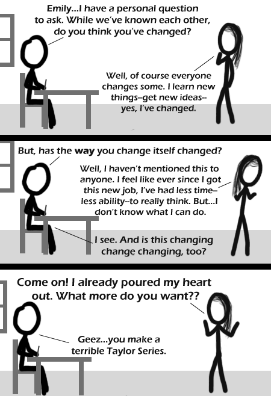

Comic JK 350
When I Feel Like It
⇤
<
?
>
⇥

⇤
<
?
>
⇥
Forum
.
RSS
.
Digg
.
Facebook
.
Reddit
.
Twitter
.
Stumbleupon
Enter your thoughts on number 350 here. Please, no spamming, trolling, phreaking, or forced memes. What a jerk. Saw it coming from line 1 EDIT: I mean the page title. >"Emily, I have a personal question..."?! >> saw it coming from the first word. "Emily", and it was all clear. >>> Saw it coming from when i loaded the page. >>>>Saw it coming last week >shouldn't her name be Elizabeth... ? >touché lol @ title text >no i do not know what you mean >>Calculus Moar Differentiable in all orders i.e. wild and unpredictable ? >And with smooth curves, obviously >>Also 'differentiable' = unique, different from the rest >>>No, I don't think that's meant at all. See: calculus heh :) I wish I was your mom's derivative so I could lie tangent to her curves. >Ew. That doesn't work. I must be your definite integral, because I fit perfectly underneath your curves. >Too bad the limits on your mom make her improper. If you know what I mean. I saw this coming on April 23, 1974, when I was 10, eating a sandwich in the playground at elementary school. I'd just finished the first half and was removing the crust from the second half (anticipating the three oreos waiting for me in the side compartment of my HotWheels lunch box) when this comic occurred to me. >You didn't know what a tailor was, let alone a Taylor Series. ya know, for practical applications the first one or two steps get you all the accuracy you need anyway. besides, it makes the math so much simpler. >try the first two steps of e. doesn't get you very far, does it? >>e^((pi)i) = -1 ... all that matters. That's what he gets for thinking so analytically about her. >guys think analy all the time differentiable in all orders = smooth curves lol